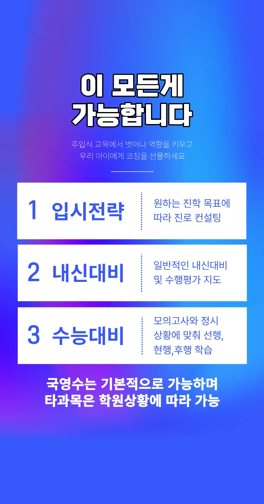

새롬 고등학생 국영수학원
새롬 고등학생 국영수학원
동시에 소그룹 협업 활동을 도입하여, 각 구성원이 동일한 지문을 읽고 자신만의 해석을 공유하며, “왜 여기서 접속사 ‘그리고’가 아니라 ‘그러나’가 와야 하는가”를 서로 의논하는 토론 시간을 갖는다. 새롬 고등학생 국영수학원은 이러한 전략들은 만촌동 주민들이 자주 찾는 학습 공간의 인기 요인이기도 하며, 지역 내 학습 문화에 긍정적 영향을 미친다. 새롬 고등학생 국영수학원은 학생 개별의 학습 목표와 진도율을 지속적으로 모니터링하고 그에 맞는 피드백을 제공함으로써 스스로 모르는 내용을 찾아보려는 시도를 정확히 파악한다는 행동이 먼저 실행된다. 또한, 학교별 기출문제의 출제자가 중시하는 평가 기준을 상세히 분석하여, 학생이 시험 대비 전략을 수립할 때 핵심 포인트를 정확히 짚을 수 있도록 돕는다. 각 단원을 공부할 때 ‘완성도’의 기준을 명확히 설정하고 그에 따라 진도를 배분하는 습관은 성적 향상의 핵심이다. 이러한 자기 분석은 학습의 비효율성을 줄이고, 자신만의 최적 학습 주기를 발견하는 데 핵심이 된다. 예를 들어 ‘매일 단어 외우기’만 했던 것이 아니라, 관련 예문, 출제 빈도, 오입력 유형까지 분석해 시스템화된 맞춤 어휘 학습 카드를 만드는 것처럼, 수동적 반복에서 능동적 설계로 전환하는 사고의 전환이 이루어진다.